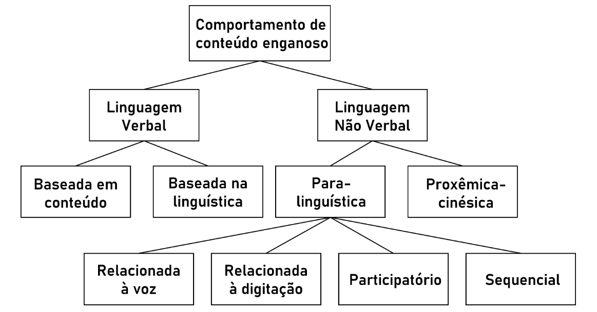
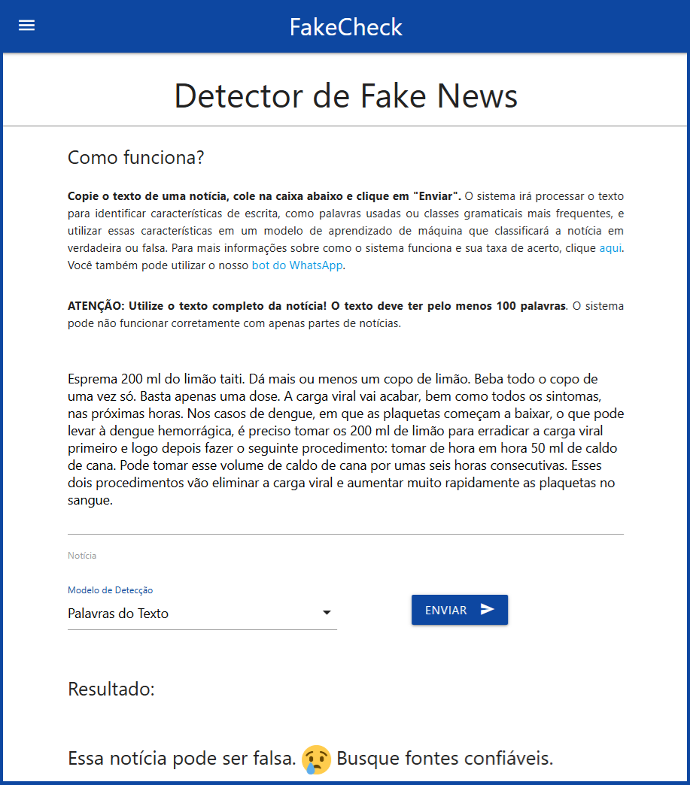

8 Detecção Automática de Notícias Falsas
8.1 Introdução
Notícias falsas podem matar, podem destruir vidas e podem interferir nos rumos de povos e nações. Apesar das maravilhas que a tecnologia traz, a própria tecnologia (que inclui dispositivos e serviços, como smartphones, redes sociais e mensageiros instantâneos) tem permitido que notícias falsas se espalhem rapidamente, alcançando milhares de pessoas em pouco tempo, causando danos de todo tipo, afetando desde decisões políticas até a saúde física e mental da população. Grandes eventos e acontecimentos recentes, como eleições presidenciais e a pandemia de COVID-19, trazem muitas evidências do impacto dessas informações enganosas. Mais do que isso, a Inteligência Artificial, apesar dos avanços impressionantes, tem produzido sistemas que, como efeito colateral, podem criar desinformação. Assim, o problema das notícias falsas, embora antigo, ganhou uma nova dimensão com a tecnologia, tornando-se uma ameaça significativa para a sociedade.
Nesse contexto, a tarefa de detecção automática de notícias falsas tem grande apelo junto à sociedade (quer seja em nível individual, quer seja em nível governamental e de gestão), com potencial de trazer contribuições reais, com soluções aplicadas no dia a dia, podendo salvar vidas. Do ponto de vista científico, é também uma tarefa de grande interesse e com desafios instigantes, que incluem caracterizar o estilo de escrita de notícias falsas (e, complementarmente, das verdadeiras), explicar e mapear a distribuição dessas notícias e como elas afetam as várias camadas da sociedade, e como desenvolver sistemas computacionais que as identifiquem automaticamente.
Neste capítulo, apresenta-se o problema e relatam-se os esforços da área de Processamento de Linguagem Natural (PLN) para lidar com a questão, com foco especial na língua portuguesa do Brasil. Inicialmente, o problema é contextualizado e são apresentadas as bases teóricas para a compreensão do fenômeno das notícias falsas. Em seguida, são introduzidos os principais corpora existentes para o português, sobre os quais sistemas computacionais são desenvolvidos e avaliados. São então discutidos métodos e abordagens aplicados à identificação automática de notícias falsas. Finaliza-se com uma discussão sobre consequências sociais e considerações finais sobre este tópico tão relevante.
8.1.1 Conteúdo enganoso: definições
Conteúdo enganoso, desilusão, fraude e mentira são traduções aceitas para a expressão “deception”, comum na língua inglesa para se referir a uma informação transmitida para criar uma falsa impressão ou conclusão. As notícias falsas, também popularmente chamadas pelo termo em inglês, fake news, são provavelmente o tipo mais citado de conteúdo enganoso. Elas são propositalmente divulgadas para enganar, sendo prejudiciais, incluindo os casos de quando o conteúdo é desconectado de sua origem e contexto (Lazer et al., 2018; Rubin, 2014).
Além das notícias falsas, Rubin et al. (2015) incluem os trotes/embustes (hoaxes, em inglês) e o conteúdo humorístico (que inclui ironia, sarcasmo e sátira, projetados para serem percebidos pelo leitor/ouvinte) como tipos de conteúdo enganoso. Santos (2022) e Chen et al. (2015) também citam os casos das revisões falsas de produtos (em sites de comércio eletrônico, por exemplo, para promover ou prejudicar produtos ou empresas) e os clickbaits (conteúdos que chamam a atenção, visando que o usuário clique em algum link).
Outra classificação interessante refere-se aos termos misinformation, disinformation e malinformation (Wardle; Derakhshan, 2017):
Misinformation: as informações são falsas, mas não são criadas com a intenção de causar dano ao leitor. Esta definição abrange os erros não intencionais, tais como legendas de fotos erradas, datas, estatísticas, erros de tradução e até situações em que ironias e sátiras são levadas a sério.
Disinformation: as informações são falsas e são criadas deliberadamente de forma a prejudicar uma pessoa, grupo social, organização ou país. Aqui são incluídos conteúdos de áudio ou visual (vídeos) fabricados. As notícias falsas fazem parte desse grupo, normalmente traduzido como “desinformação”.
Malinformation: informações baseadas na realidade, usadas para infligir danos a uma pessoa, organização ou país. Publicações de informações privadas (vazamentos), mudança deliberada de contexto, data ou tempo, assédio e discurso de ódio são exemplos desta definição.
Também se pode falar em meias verdades, quando fatos verdadeiros e falsos se misturam nas notícias em diferentes graus. Em geral, os fatos verdadeiros são utilizados de tal forma que os falsos sejam amparados, aumentando suas chances de serem percebidos como legítimos (Clem, 2017). Mais recentemente, entraram em cena as pós-verdades, quando os fatos objetivos em si são menos importantes do que o apelo às emoções que trazem e às crenças que evocam. Assim, os chamados “fatos alternativos” ganham relevância frente a “fatos reais” e sentimentos têm mais peso do que evidências (Saquete et al., 2019). O termo surgiu no âmbito político, mas logo foi popularizado em outros domínios.
Especialmente com os avanços da Inteligência Artificial generativa, outras modalidades de conteúdo enganoso ganharam força, envolvendo a produção de vídeos, imagens e áudios falsos ou manipulados digitalmente, contribuindo para a proliferação das chamadas deepfakes. Esse nome surgiu da junção dos termos deep learning e fake, sendo citado originalmente em 2017 por um usuário anônimo na rede social Reddit para se referir à substituição do rosto de uma pessoa por outra em um vídeo pornográfico (Rana et al., 2022). Mais recentemente, tem-se falado em deepfakes textuais (Li et al., 2024) especificamente para se referir ao conteúdo escrito produzido por grandes modelos de língua (em inglês, Large Language Models ou LLMs).
Como se pode perceber, há todo um ecossistema em que as notícias falsas residem, sendo um ambiente em evolução, que muda conforme a sociedade, sua cultura e a tecnologia avançam. Conforme Saquete et al. (2019) discutem, esse ecossistema visa principalmente manipular a opinião pública, influenciar o comportamento das pessoas e, em última instância, trazer poder e ganhos financeiros aos envolvidos.
Esse capítulo foca especificamente nas notícias falsas em sua modalidade escrita, que têm sido o alvo de pesquisa da maior parte dos esforços atuais em PLN.
8.1.2 Notícias falsas no tempo e no espaço
Engana-se quem pensa que notícias falsas são um mal recente ou que se restringem a países com situações socioeconômicas mais frágeis.
A fabricação e a propagação de conteúdo enganoso são um fenômeno de longa data. Antigamente, as informações eram repassadas por meio de fofocas, no “boca a boca” e também nos tabloides (a chamada “imprensa marrom”), tanto para falar sobre outras pessoas de modo “inocente” como para, intencionalmente, prejudicar a reputação de outras pessoas ou empresas rivais. Até mesmo jornais e mídias televisivas podem, inadvertidamente, divulgar conteúdo enganoso, o que pode gerar severas consequências no mundo real. Por exemplo, em 1924, um documento forjado foi publicado por um jornal britânico renomado apenas quatro dias antes das eleições gerais, com o objetivo de desestabilizar o processo eleitoral1. Outro exemplo ocorreu depois de um acidente na Inglaterra, em 1989, quando muitas pessoas morreram devido à superlotação e falta de segurança em um estádio. Os jornais da época relataram que, entre as pessoas que morreram, algumas estavam alcoolizadas e brigaram com policiais que estavam tentando resgatar os feridos. Anos depois, provou-se que essas afirmações eram falsas2.
Hoje as redes sociais e os aplicativos de mensagens instantâneas permitem que tais conteúdos enganosos alcancem uma audiência nunca imaginada antes da era da web, não discriminando países. Há casos famosos de eventos afetados por notícias falsas em todo o mundo, como a eleição americana de 2016, a saída do Reino Unido da União Europeia (que ficou conhecida pelo termo “Brexit”) em 2020, a pandemia de COVID-19 entre 2020 e 2023, ou a recomendação de tratamento médico para a epidemia recorrente de dengue no Brasil. O Quadro 8.1 mostra um exemplo típico desse último caso, que transcreve uma fala divulgada por vídeo sobre tratamento para dengue, amplamente desmentida por diversas agências de checagem de fatos3.
Quadro 8.1 Exemplo de notícia falsa sobre tratamento para dengue.
Atualmente, tais desafios têm ganhado proporções ainda maiores. Há contas forjadas e robôs nas redes sociais que replicam grandes volumes desse tipo de conteúdo (para fins diversos). O advento da Inteligência Artificial generativa, apesar de sua utilidade, também traz preocupações, pois há muita desinformação produzida (dadas as limitações ainda existentes nas técnicas empregadas e seu possível mal uso), trazendo ao cenário não apenas notícias falsas produzidas por humanos, mas também conteúdo enganoso gerado por máquinas (Su et al., 2024).
Soma-se a esse cenário a dificuldade humana de detectar conteúdo enganoso em geral. Pesquisas já mostraram que humanos não conseguem separar satisfatoriamente notícias verdadeiras de notícias falsas (Bond Jr.; DePaulo, 2006; George; Keane, 2006), alcançando entre 50% e 63% de sucesso, dependendo do que seja considerado enganoso (Rubin; Conroy, 2011). Algumas explicações para isso são:
a falta de conhecimento prévio das pessoas sobre determinados assuntos, fato este relacionado a questões de formação e educação formal, muitas vezes;
a percepção humana da veracidade da notícia pode ser afetada pelo fato de as informações veiculadas estarem alinhadas com suas crenças e opiniões pré-existentes, o que tem sido chamado de “viés da confirmação” (Thakar; Bhatt, 2024);
algumas pessoas recebem informações de fontes socialmente próximas, o que as leva a considerar legítimas as informações compartilhadas, além do fato de os usuários raramente verificarem as informações que compartilham (Tandoc Jr. et al., 2018);
a dificuldade, a falta de interesse ou a falta de disponibilidade do usuário para seguir dicas que são amplamente divulgadas por sites de notícias e redes sociais, como o Facebook, cujas orientações são mostradas no Quadro 8.2, conforme reproduzidas por Santos (2022).
Quadro 8.2 Diretrizes do Facebook para identificação de notícias falsas (Santos, 2022).
8.1.3 Combate ao conteúdo enganoso
Como a propagação de conteúdo enganoso alcançou um ponto crítico, a partir das evidências de que as redes sociais têm uma parcela grande de responsabilidade pela proliferação desse tipo de conteúdo, somada à dificuldade humana de detectar tais conteúdos, surgiram iniciativas de combate a essa prática.
Agências de comunicação têm dado apoio a sites de checagem manual de fatos e a companhias de grande apelo digital. No Brasil, a checagem de fatos é em grande parte feita por jornalistas, em sites e agências como o Boatos.org, Fato ou Fake4, E-Farsas5, Aos Fatos6 e Agência Lupa7, entre outros. Eles costumam seguir uma metodologia de checagem de acordo com as diretrizes da Rede Internacional de Checagem de Fatos (em inglês, International Fact-Checking Network ou IFCN), que promove iniciativas de verificação de fatos8.
Estudos sobre a produção e a disseminação de notícias falsas têm sido realizados buscando-se mapear o fenômeno e seu comportamento. Vosoughi et al. (2018) relatam que, em seus estudos, cerca de 1% das notícias falsas mais populares foram difundidas de 1.000 a 100.000 pessoas, enquanto as notícias verdadeiras raramente chegam a 1.000 pessoas, o que pode ser explicado pelo apelo emotivo e pelo grau de novidade das notícias falsas.
No âmbito das pesquisas de PLN, há esforços para estudar as características do conteúdo enganoso e como detectá-lo automaticamente. Considerando toda a história da área, as tentativas são relativamente recentes, tanto do ponto de vista teórico quanto do prático, sendo majoritariamente focadas no processamento do conteúdo escrito. Segundo Hauch et al. (2012), a automatização do processo de detecção de conteúdo enganoso é atraente por no mínimo dois motivos: (i) esses sistemas podem ser mais objetivos do que os humanos, que são propensos a erros e vieses; e (ii) julgamentos online de várias pistas a partir de vídeos ou áudios podem sobrecarregar o humano e levar a atrasos e erros.
Em PLN, o uso de aprendizado de máquina, tanto da linha mais clássica quanto da linha profunda, incluindo os LLMs, são atualmente abordagens bastante comuns para a identificação de notícias falsas. Essas abordagens visam aprender automaticamente as características textuais (simples ou complexas) que podem se correlacionar com a veracidade/falsidade da informação, usando-as para identificar a classe de notícias novas. Há também outras abordagens, por exemplo, aquelas que buscam identificar fatos e checá-los automaticamente, assim como usar técnicas baseadas em recuperação e extração de informação.
Normalmente, essas abordagens baseiam-se em dados encontrados em corpora que contêm notícias falsas e verdadeiras, assim como metadados, que servem de base para o desenvolvimento/treino e avaliação/teste dos métodos de detecção de notícias falsas (para mais detalhes sobre corpora, ver Capítulo Conjunto de dados, dataset e corpus). A seguir, os principais corpora existentes para a tarefa de detecção de notícias falsas para a língua portuguesa são brevemente apresentados.
8.2 Corpora
A análise de notícias falsas tem se beneficiado da disponibilidade de variados corpora. Para o inglês, existem vários corpora em diferentes domínios, como política (Gruppi et al., 2020, 2021; Vlachos; Riedel, 2014; Wang, 2017), medicina (Dai et al., 2020), opiniões sobre produtos ou hotéis (Fornaciari; Poesio, 2013; Ott et al., 2011; Salminen et al., 2022) e tópicos sociais, como aborto (Pérez-Rosas; Mihalcea, 2014). Apesar de existir uma quantidade significativamente menor de corpora em português, nos últimos anos esse problema tem diminuído com o surgimento de corpora específicos para o português do Brasil, com características distintas que influenciam diretamente a eficácia dos modelos de detecção de notícias falsas.
A Tabela 8.1 lista os principais corpora de notícias falsas para o português do Brasil de que se tem ciência (na data da escrita desse capítulo), organizados cronologicamente conforme seu surgimento.
| Corpus | Quantidade de notícias | Categorias envolvidas | Período do conteúdo | Tipo de material |
|---|---|---|---|---|
| Fake.br (Monteiro et al., 2018; Silva et al., 2020) | 7.200 | falsa, verdadeira | 2016 a 2018 | Notícias |
| FACTCK.BR (Moreno; Bressan, 2019) | 1.309 | falsa, meia-verdade, verdadeira | 2016 a 2019 | Notícias |
| Bracis2019FakeNews – Twitter (Faustini; Covões, 2019) | 8.981 | falsa, verdadeira | — | Postagens do X (Twitter) |
| Bracis2019FakeNews – WhatsApp (Faustini; Covões, 2019) | 177 | falsa, verdadeira | — | Mensagens do WhatsApp |
| FakeTweet.Br (Cordeiro; Pinheiro, 2019) | 299 | falsa, verdadeira | — | Postagens do X (Twitter) |
| FakeWhastApp.BR (Cabral et al., 2021) | 5.284 | falsa, verdadeira | — | Mensagens do WhatsApp |
| FakeRecogna (Garcia et al., 2022) | 11.902 | falsa, verdadeira | 2018 a 2021 | Notícias |
| FakePedia (Charles et al., 2022) | 12.398 | falsa, verdadeira | 2013 a 2021 | Notícias |
| FakeTrueBR (Chavarro et al., 2023) | 3.582 | falsa, verdadeira | — | Notícias |
| Fake tweets Covid-19 (Geurgas; Tessler, 2024) | 14.000 | falsa, verdadeira | — | Postagens do X (Twitter) |
| FakeRecogna 2.0 (Garcia et al., 2024) | 52.800 | falsa, verdadeira | 2002 a 2023 | Notícias |
O primeiro corpus para o português de que se tem conhecimento é o Fake.br (Monteiro et al., 2018; Silva et al., 2020), com notícias verdadeiras e falsas alinhadas, ou seja, cada notícia falsa tem uma notícia verdadeira relacionada. O Quadro 8.3 ilustra um caso de notícias alinhadas do corpus.
Quadro 8.3 Exemplo de notícia falsa e sua contraparte verdadeira no corpus Fake.br.
Como se pode ver na Tabela 8.1, o maior corpus conhecido é o FakeRecogna 2.0 (Garcia et al., 2024), com mais de 50.000 notícias.
Os corpora possuem características variadas. Por exemplo, alguns deles fornecem informações temporais, enquanto outros não. Informações temporais são importantes porque já se percebeu na área que os sistemas computacionais de detecção de notícias falsas podem ser fortemente ancorados nos tópicos de determinado período. Na coluna “Período do conteúdo” da Tabela 8.1, é apresentado o período abrangido pelos dados apenas quando essa informação está disponível. Além disso, a informação é baseada nos metadados encontrados no corpus, o que pode ser diferente da descrição do artigo principal do corpus. Por exemplo, Garcia et al. (2024) citam que as notícias do corpus FakeRecogna 2.0 foram coletadas entre 2019 e 2023, mas, na análise dos metadados, foram encontradas notícias publicadas em 2002.
Os dados também variam em termos de aplicação. Existem corpora que incluem notícias em seu sentido mais estrito (o jornalístico), como o FakeRecogna, FakeRecogna 2.0 e o Fake.br. Outros usam dados relativos a postagens em redes sociais, como o FakeTweet.Br. Além disso, há corpora voltados para dados de aplicativos de mensagens instantâneas, como o WhatsApp, incluindo o Bracis2019FakeNews e o FakeWhastApp.BR.
Outro ponto de variação entre os corpora são as classes de veracidade avaliadas. A maioria trabalha com uma classificação binária, distinguindo entre notícias falsas e verdadeiras. Porém, o corpus FACTCK.BR contém três classes: falsa, meia-verdade e verdadeira.
Por fim, algumas bases de dados, como a Fake.br, fornecem, além dos textos, metadados e atributos linguísticos. Esses recursos adicionais enriquecem as possibilidades de análise, fornecendo aos pesquisadores informações estruturadas que podem ser diretamente utilizadas nos modelos de classificação. Embora seja possível extrair alguns desses atributos diretamente dos textos, sua inclusão prévia no corpus facilita o processo de pesquisa e gera maior consistência nos resultados.
Na próxima seção, são discutidos alguns métodos de detecção automática de notícias falsas, focando-se nos trabalhos existentes para a língua portuguesa, muitos dos quais se baseiam nos corpora aqui apresentados.
8.3 Métodos de detecção automática
Na busca por identificar notícias falsas de forma automática, diversos estudos na literatura exploram uma ampla gama de abordagens. Muitos desses estudos podem ser categorizados de acordo com a taxonomia do comportamento enganoso proposta por Zhou (2005), reproduzida na Figura 8.1. Essa taxonomia ajuda a organizar o comportamento enganoso, auxiliando (i) na sistematização de sinais e atributos que podem indicar se uma informação é falsa e (ii) na criação de métodos computacionais.

Fonte: Adaptada de (Zhou, 2005)
A taxonomia se divide em Linguagem Verbal e Não Verbal. Os indicadores não verbais focam nas características exibidas enquanto uma pessoa produz conteúdo enganoso, enquanto que os verbais estão ligados ao conteúdo escrito e falado da língua.
A paralinguística, um dos subgrupos da linguagem não verbal, foca em propriedades do discurso que não estão diretamente relacionadas ao conteúdo falado. Isso inclui propriedades relacionadas à voz, como o tom de voz e pausas na fala, relacionados ao teclado (velocidade de digitação, quantidade de vezes que apagou a mensagem, erros de digitação por proximidade de teclas), participatório (demora entre as respostas, mudança de assunto) e sequencial (de quem veio a iniciação de conversas). O segundo subgrupo da linguagem não verbal se refere ao comportamento proxêmico-cinésico do enganador. Ele envolve movimentos e posturas corporais, como gestos com as mãos e braços, expressões faciais e movimentos oculares, entre outros.
Apesar da linguagem não verbal ser importante, as pesquisas de PLN costumam atuar mais diretamente no grupo de Linguagem Verbal. Esse grupo é dividido em comportamento baseado em conteúdo e na linguística. Nas abordagens baseadas em linguística, são usadas pistas provenientes do texto para fazer a diferenciação entre conteúdo falso ou verdadeiro. Assume-se que os produtores de conteúdo enganoso podem inconscientemente deixar rastros linguísticos que sinalizam a falsidade. Por outro lado, a abordagem baseada em conteúdo busca simular a metodologia de checagem de fatos, avaliando cada informação apresentada, muitas vezes remetendo a abordagens baseadas em grafos de conhecimento.
A seguir, descrevem-se alguns métodos de detecção de notícias falsas, principalmente os aplicados para o português e que se alinham ao grupo da Linguagem Verbal. Para fins didáticos, os métodos são organizados em abordagens computacionais mais claramente discerníveis (na época da escrita deste capítulo), sendo que se busca apresentar pelo menos um exemplo típico pertencente a cada abordagem.
8.3.1 Aprendizado de máquina com atributos linguísticos
De acordo com Conroy et al. (2015), a maioria dos enganadores usa a linguagem estrategicamente para evitar que sejam descobertos. Nesse caso, o objetivo da abordagem linguística é procurar por exemplos de vazamentos – ou os chamados “sinais de engano preditivo” – presentes no conteúdo de uma mensagem. Isso demanda uma análise mais profunda do texto na busca de padrões que possam indicar se uma informação é enganosa ou não.
Para identificar esses padrões, a análise pode utilizar atributos linguísticos que possam diferenciar o conteúdo verdadeiro do falso, extraídos de elementos como classes gramaticais, semântica, erros ortográficos, expressividade e diversidade de conteúdo para representar as amostras textuais, a frequência de uso de certas palavras e o padrão de capitalização do texto.
Monteiro et al. (2018) e Silva et al. (2020) apresentaram a primeira abordagem linguística para a detecção de notícias falsas em português, seguindo o que talvez possa ser definida como uma das abordagens mais clássicas para o problema. Usando o corpus Fake.br, o processo de detecção de notícias falsas foi modelado como uma tarefa de aprendizado de máquina, em que as notícias são as instâncias, a classificação é binária (notícia falsa ou verdadeira) e os atributos das notícias utilizados para a classificação incluem informações sobre os tokens presentes nas notícias e atributos linguísticos derivados.
Para representar os tokens de cada notícia, foram utilizadas a representação de bag of words (com ponderação via Term Frequency-Inverse Document Frequency ou TF-IDF) e a média das representações vetoriais dos tokens (com 300 dimensões) produzidas pelos métodos Word2Vec (versão skip-gram) (Mikolov et al., 2013) e FastText (Bojanowski et al., 2017) treinados para o português (Hartmann et al., 2017) (Capítulo Representação vetorial e semântica distribucional). Em relação aos atributos linguísticos, foram utilizados (i) atributos sugeridos por Zhou et al. (2004), que são pausalidade, emotividade, incerteza e não imediatismo, e (ii) atributos mais gerais como diversidade, tamanho médio das sentenças, tamanho médio das palavras e número de erros ortográficos na notícia. A pausalidade indica a ocorrência de pausas no texto, que é computada como o número de sinais de pontuação sobre o número de sentenças. A emotividade mede a expressividade da linguagem, calculada como a soma do número de adjetivos e advérbios dividida pela soma do número de substantivos e verbos. A incerteza é baseada nas ocorrências de verbos modais e no uso da voz passiva. O recurso de não imediatismo é baseado na frequência de uso dos pronomes de 1a e 2a pessoa. A diversidade é calculada como o número total de tokens de conteúdo diferentes sobre o número total de tokens de conteúdo (ou seja, é uma versão mais refinada da conhecida taxa type-token).
Os autores avaliaram diferentes abordagens de pré-processamento dos dados e técnicas de Aprendizado de Máquina, incluindo, por exemplo, regressão logística, árvores de decisão, floresta aleatória e máquinas de vetores de suporte, além de testarem métodos de ensemble e stacking. Um ponto a destacar é que, como as notícias verdadeiras do corpus utilizado costumam ser maiores do que as falsas, os autores truncaram os maiores textos para equalizar os tamanhos e evitar vieses na classificação automática. De forma geral, os autores concluem que os melhores resultados foram produzidos pela técnica de ensemble, aproximando-se de 97% de acurácia na classificação.
Há várias outras iniciativas para o português que seguiram uma abordagem similar, com alguma variação no conjunto de atributos linguísticos utilizados. Veja, por exemplo, os trabalhos de Faustini; Covões (2019) e Okano; Ruiz (2019). Há também trabalhos que buscaram avaliar técnicas independentes de língua, incluindo o português entre seus experimentos, como os trabalhos de Abonizio et al. (2020) e Faustini; Covões (2020).
8.3.2 Modelos de linguagem
Modelos de aprendizado profundo têm sido utilizados em várias pesquisas que tratam do problema das notícias falsas. Em particular, modelos de linguagem, como o BERT e T5 (Capítulo Modelos de linguagem), podem ser empregados tanto para gerar representações vetoriais dos textos, que servem como entrada para métodos de classificação, quanto para atuar diretamente como classificadores.
Nesse contexto, um estudo que ilustra bem essa abordagem é o de Vieira et al. (2025), que avaliou vários modelos de geração de representação vetorial, comparando modelos tradicionais de classificação que incluíram floresta aleatória, máquinas de vetores de suporte e rede neural perceptron multicamadas. Para a geração das representações vetoriais, eles aplicaram os seguintes modelos especializados para o português: BERTimbau, TeenyTinyLlama e Tucano. Também aplicaram modelos voltados para o inglês, como BERT, RoBERTa e BART. Por fim, aplicaram modelos multilíngues: mBERT, XLM-RoBERTa e mBART. Todos os métodos com os diferentes modelos de representação foram testados na base de dados Fake.Br. De acordo com os autores, a melhor combinação em termos de desempenho foi o mBART com o método de máquinas de vetores de suporte, atingindo uma acurácia de 97,43%. Entretanto, ao considerar o tempo de processamento, a combinação BERTimbau com o mesmo método apresentou uma acurácia de 97,22% e um tempo de processamento significativamente menor (aproximadamente 86% inferior), oferecendo assim um bom equilíbrio entre precisão e eficiência.
Na mesma linha, Garcia et al. (2024) avaliaram o desempenho de modelos tradicionais e de aprendizado profundo sobre o corpus FakeRecogna 2.0. Entre os modelos tradicionais, testaram regressão logística, perceptron multicamadas, naive Bayes, optimum-path forest (Papa et al., 2009), floresta aleatória e máquinas de vetores de suporte. No que diz respeito aos modelos de aprendizado profundo, testaram LSTM, GRU, CNN e BERT. Para gerar a representação vetorial dos textos nos experimentos com métodos tradicionais, utilizaram a frequência dos termos, a representação TF-IDF e o FastText. Nos experimentos com modelos de aprendizado profundo, utilizaram o FastText para LSTM, GRU e CNN, o BERTimbau (Souza et al., 2020) como a versão do BERT para o português, e o modelo PTT-5 (Portuguese, Tagalog, Turkish, Tamil e Telugu) (Carmo et al., 2020) para o T5.
É interessante destacar que a abordagem proposta pelos autores se diferencia de outras metodologias ao implementar uma etapa de sumarização das notícias verdadeiras antes de treinar os modelos de classificação (em vez de truncar os maiores textos, como comentado anteriormente neste capítulo). Dessa forma, a diferença de tamanho entre notícias verdadeiras e falsas é resolvida. Os autores adotaram tanto a sumarização extrativa quanto a abstrativa. Garcia et al. (2024) afirmam que a sumarização extrativa é vantajosa, pois tende a ser imune a inconsistências e “alucinações”, já que o resumo final é composto pelas sentenças mais relevantes sem a geração de novas palavras ou expressões. Por outro lado, a sumarização abstrativa permite a produção de sentenças inéditas que podem diferir do texto original em termos de semântica e estrutura das sentenças, mas possui como vantagem ser mais semelhante à escrita humana.
Os melhores resultados obtidos pelos autores foram alcançados com o BERT, que apresentou acurácia aproximada de 98%. O modelo T5 apresentou resultados ligeiramente inferiores.
Além dos métodos de aprendizado profundo aplicados por Garcia et al. (2024), outros estudos têm utilizado abordagens alternativas, como redes neurais de atenção hierárquica (Okano et al., 2020) e redes neurais de grafos (De Souza et al., 2024). No primeiro trabalho, a rede neural de atenção hierárquica alcançou uma acurácia de 90% (com textos truncados). No segundo trabalho, os autores propuseram um método que incorpora um mecanismo de atenção na abordagem de aprendizado não rotulado por propagação de rótulos utilizando uma rede neural baseada em grafo. O método foi avaliado em seis corpora de notícias falsas, representando diferentes cenários quanto à linguagem, fonte, tópicos e balanceamento. Nos testes realizados com o corpus Fake.br, o método alcançou acurácia de cerca de 78%.
Outros métodos já utilizados para a detecção de notícias falsas que empregaram textos em português do Brasil incluem variantes e aprimoramentos do BERT, como o modelo de linguagem DistilBERT. Um exemplo é o trabalho de Gôlo et al. (2023), que apresenta o MVAE-FakeNews (codificadores variacionais multimodais para detecção de notícias falsas). Este método multimodal representa os textos na detecção de notícias falsas por meio de aprendizado baseado em uma única classe, aprendendo uma nova representação a partir da combinação de modalidades promissoras para dados de notícias, combinando informações de linguagem, características linguísticas e tópicos, sendo que a modalidade de linguagem é derivada das informações do modelo DistilBERT. Neste trabalho, os autores utilizam o algoritmo de máquinas de vetores de suporte com uma classe para fazer a classificação. Os resultados indicam que o MVAE-FakeNews alcançou valores de acurácia melhores do que diversos outros métodos, demonstrando que abordagens multimodais podem ser melhores do que abordagens unimodais que concatenam os dados de entrada. Nos experimentos com o corpus Fake.br, o melhor valor de acurácia obtido foi de 65% (utilizando 10% de notícias falsas rotuladas), com os métodos baseados em DistilBERT apresentando os melhores desempenhos.
O trabalho de Pires; Silva (2024) também avaliou variantes do modelo BERT, mais especificamente o BERTimbau e o mBERT, comparando seus resultados com o BERT. Eles testaram esses métodos nas seguintes bases de dados: Fake.Br, FakeTrueBR, FakeRecogna e Fakepedia. De acordo com os autores, os resultados obtidos indicam uma superioridade do BERTimbau sobre o BERT e sobre o mBERT na referida tarefa, com uma melhora média da medida F1 de 2,37% e 1,07%, respectivamente.
Outro trabalho que avaliou o mBERT é Fischer et al. (2022) comparando-o com outros modelos de classificação, como regressão logística, árvores de decisão, floresta aleatória, k-vizinhos mais próximos, SVM, naive Bayes, XGBoost, CNN, GRU e LSTM. O mBERT obteve uma medida F1 de 0,98 superando os outros métodos avaliados.
Em paralelo a essas abordagens, a aplicação de LLMs (Capítulo Modelos de linguagem) na detecção de notícias falsas tem ganhado atenção, especialmente em trabalhos em inglês, como os de Lucas et al. (2023) e Su et al. (2024), que discutem não apenas a detecção de notícias falsas com LLMs, mas também a geração desse conteúdo.
O uso de LLMs para detectar notícias falsas não é trivial, pois o treinamento desses modelos é custoso, resultando em atualizações pouco frequentes, o que muitas vezes os impede de fornecer informações atualizadas sobre determinados assuntos. No entanto, uma solução para isso é a técnica de Retrieval-Augmented Generation (RAG), que permite fornecer informações atualizadas aos LLMs. Essa técnica utiliza conceitos de recuperação de informação para buscar, em uma base de dados complementar, os conteúdos mais relevantes para uma pergunta (especificada na forma de um prompt) e, em seguida, passar essas informações ao LLM como contexto. Assim, o LLM gera respostas que, em vez de se basearem apenas em seu conhecimento prévio, são fundamentadas nos dados adicionais fornecidos.
Um exemplo relevante no contexto de notícias falsas é apresentado por Yue et al. (2024), que propõe o framework RARG (Retrieval Augmented Response Generation) para combater a desinformação online, especialmente no contexto da COVID-19. O RARG gera respostas baseadas em evidências científicas para refutar informações falsas, funcionando em duas etapas: (1) recuperação de evidências, onde documentos relevantes são coletados e reclassificados a partir de uma base com mais de um milhão de artigos acadêmicos; e (2) geração de respostas, em que um LLM é treinado para produzir respostas polidas e factuais com base nas evidências obtidas. Além disso, o modelo é otimizado com aprendizado por reforço com feedback humano (Capítulo Modelos de linguagem), garantindo o uso eficaz das evidências sem comprometer a qualidade das respostas.
Yue et al. (2024) fizeram experimentos com o RARG usando dados tanto de dentro quanto de fora do domínio da COVID-19 para a língua inglesa. Eles realizaram uma avaliação comparativa, de formas qualitativa e quantitativa, para analisar as respostas geradas por diferentes modelos. As métricas quantitativas utilizadas incluíram critérios de refutação, factualidade, polidez, e relevância da resposta em relação à alegação de entrada e à evidência. Foram avaliados modelos baseados em geração de texto, como BART, DialoGPT e GODEL, além de métodos de aprendizado por reforço, como PARTNER e MisinfoCorrect, e LLMs como Llama 2 e GPT-3.5. As análises revelaram que o modelo RARG obteve o melhor desempenho geral.
Para o português do Brasil, já existem algumas contribuições relevantes que indicam o potencial crescente dessa linha de pesquisa. Por exemplo, o estudo de Gôlo et al. (2024) explora modelos de código aberto, pouco aplicados ao contexto de notícias falsas. Os pesquisadores criaram um novo conjunto de dados de notícias políticas brasileiras e realizaram uma avaliação empírica de LLMs de código aberto e da OpenAI. O Gemma 2 do Google superou outros seis LLMs (Llama 3, Phi 3, Qwen 1, Qwen 2, Gpt 3.5 turbo e GPT 4), mostrando-se o mais promissor para essa tarefa, atingindo valores de F1 de 0,90. Além do desempenho de classificação, o estudo avaliou a capacidade dos LLMs de gerar explicações alinhadas ao raciocínio humano (com destaque para os modelos de melhor desempenho) e constatou que os modelos Gemma e Qwen produziram os melhores embeddings, separando com clareza notícias falsas e verdadeiras em visualizações via t-SNE.
Em outro estudo relacionado, Silva et al. (2025) avaliam o impacto de notícias falsas geradas por LLMs no desempenho de métodos de aprendizado de máquina na classificação. A pesquisa utilizou diversos modelos para classificar notícias falsas, incluindo algoritmos de aprendizado de máquina tradicionais (árvore de decisão, regressão logística, floresta aleatória, máquinas de vetores de suporte e gradiente descendente estocástico), um modelo BERTimbau ajustado, um LLM puro e dois LLMs combinados com RAG. Os experimentos foram realizados usando os corpora Fake.Br e FakeTrueBR pelo fato deles serem alinhados, isto é, cada notícia falsa possui sua contraparte verdadeira. Os pesquisadores avaliaram o desempenho desses modelos com notícias falsas sintéticas, criadas com o modelo de LLM Sabiá-3. Os resultados revelaram uma degradação significativa no desempenho dos modelos de aprendizado de máquina quando avaliados em condições de incompatibilidade, ou seja, quando treinados com conteúdo gerado por humanos e testados com notícias falsas geradas por LLMs, ou vice-versa. Por exemplo, a medida F1 do BERTimbau foi de 0,99 no experimento onde o conjunto de treino e teste eram compostos por notícias escritas por humanos, mas caiu para 0,69 quando o conjunto de treino era composto por notícias geradas por humanos e o conjunto de teste era formado por notícias geradas por LLMs. Observou-se ainda que classificadores baseados em LLM foram mais robustos sob condições de incompatibilidade, enquanto que o BERTimbau e os modelos tradicionais de aprendizado de máquina apresentaram melhor desempenho quando não havia essa diferença. Os autores afirmam que os resultados obtidos ressaltam a necessidade de abordagens mais resilientes e adaptativas diante da crescente sofisticação do conteúdo gerado por LLMs.
8.3.3 Checagem de conteúdo
Para abordagens de checagem automática de conteúdo, em que os fatos em si devem ser verificados (o que vai além de avaliar estilo de escrita e atributos linguísticos), Thorne; Vlachos (2018) sugerem que se extraiam triplas de informação dos documentos verdadeiros (por algum processo de extração de informação – ver Capítulo Extração de Informação), normalmente formadas por <sujeito, verbo, objeto>, que constituem os fatos básicos mencionados. Nem sempre é trivial fazer isso, pois pode haver sentenças com número variável de argumentos (ausência de objeto ou mais de um objeto, por exemplo) ou com estruturas sintáticas mais complexas ou não usuais. Com base nessas triplas, pode-se construir um grafo de conhecimento, em que sujeitos e objetos dão origem a vértices do grafo e os verbos definem arestas entre eles. O grafo é, dessa forma, uma representação estruturada do conteúdo verídico, podendo ser utilizado para avaliação da veracidade de novas informações, o que pode ser feito de diferentes formas.
Santos; Pardo (2020) adaptam para o português a abordagem de Ciampaglia et al. (2015). Nessa abordagem, o grafo de conhecimento é constituído de triplas extraídas da Wikipédia, considerada como uma fonte de informações verídicas sobre o mundo. Apresentada uma nova informação a ser checada, as triplas dessa informação são extraídas e analisadas com o apoio do grafo de conhecimento: caminhos distintos entre sujeitos e objetos, com diferentes distâncias, fornecem suportes factuais diferentes para as afirmações. São consideradas verdadeiras as afirmações cujos sujeitos e objetos apresentam conexões diretas entre si ou caminhos de distância relativamente curta. A proximidade entre os conceitos envolvidos no grafo reflete, portanto, a veracidade da informação.
Os autores testam a abordagem com afirmações históricas e geográficas, em especial, capitais de estados e países e cônjuges de presidentes brasileiros. Em média, os resultados atingem valores de acurácia de 74%. Essa abordagem, apesar de exigir análise linguística mais refinada para produção do grafo de conhecimento e de produzir resultados inferiores em relação às outras abordagens, é interessante por permitir rastrear a veracidade de cada fato e explicar os resultados. Como amplamente discutido atualmente na Inteligência Artificial, a explicabilidade dos métodos é uma característica muito relevante (ver, por exemplo, o Capítulo Questões éticas em IA e PLN).
Há várias outras estratégias de uso de grafos que não necessariamente buscam os fatos explicitamente. Santos; Pardo (2021), por exemplo, testam outras formas de construção e percurso em grafos (tanto para notícias verdadeiras como falsas) e o uso de medidas de redes complexas para caracterização estrutural de notícias falsas e verdadeiras, que se mostram promissoras (e às vezes de mais simples aplicação), mas com resultados inferiores aos obtidos anteriormente.
8.3.4 Recuperação de informação
Santos; Pardo (2020) exploram uma estratégia baseada no comportamento humano de checagem de informação: usa-se um sistema de recuperação de informação (no caso, o Google – ver Capítulo Recuperação de Informação) para buscar pelo título da notícia de interesse, analisando-se os resultados retornados na busca. Caso haja indício de falsidade da notícia correspondente, ela é classificada dessa forma.
Os autores analisam apenas os links e os snippets9 retornados na 1a página de resultados. Se houver link de algum site de verificação de notícias (como os citados no início desse capítulo, por exemplo, Boatos.org, Aos Fatos e Agência Lupa) ou houver algum termo indicativo de falsidade nos snippets, a notícia é classificada como falsa. Os termos indicativos considerados pelos autores são “fake”, “falso”, “mentira”, “calúnia”, “inverídico”, “enganoso”, “farsa”, “ilusório”, “ilegítimo”, “boato” e “rumor”, além de suas variações possíveis de gênero e número.
Os autores avaliam essa estratégia com o corpus Fake.br, indicando resultados de classificação com acurácia de 68%. Apesar do resultado limitado, a simplicidade desse método torna-o interessante, pois faz uso de serviços de web já disponíveis. Além disso, essa estratégia evidencia a necessidade de modelagens mais sofisticadas para o devido tratamento do fenômeno das notícias falsas.
8.3.5 Análise de credibilidade
Uma outra linha de pesquisa relacionada à detecção de notícias falsas é a análise de credibilidade. Newell et al. (2017) afirmam que a credibilidade das atribuições feitas na notícia é fundamental para garantir a confiança nos meios de comunicação. Nesse sentido, Burriss (1988) comenta que o jornalismo deve lidar com fatos verificáveis, sendo princípio básico a seguir, pois o público que recebe as notícias depende (i) da reputação da organização noticiosa, (ii) da reputação do repórter e (iii) da informação dentro da própria história, a fim de determinar a exatidão de uma notícia. Por isso, é necessário buscar padrões linguísticos no texto e metadados que possam medir a credibilidade de uma notícia.
Um exemplo de trabalho que segue essa linha é de Couto et al. (2024), que analisou padrões de rede de fontes de notícias brasileiras de alta e baixa credibilidade, focando em redes de desinformação. Esses padrões emergem de diversas fontes, como registros de domínios, certificados TLS, infraestrutura de hospedagem e geolocalização. Para conduzir essa análise, os autores criaram um conjunto de sites de baixa credibilidade, identificando aqueles que publicaram ao menos uma notícia cuja veracidade foi contestada por uma agência de checagem de fatos signatária da International Fact-Checking Network (IFCN). A partir dessa base, 31 atributos foram computados.
Segundo os autores, os resultados revelaram que apenas 12,2% dos sites de baixa credibilidade estão registrados e hospedados no Brasil, em contraste com 47% dos sites de alta credibilidade. Além disso, sites de alta credibilidade tendem a ter uma vida útil mais longa, domínios registrados por períodos maiores e certificados TLS (em inglês, Transport Layer Security) com validade estendida. Foi também identificado que sites de baixa credibilidade são mais propensos a utilizar TLDs (em inglês, Top Level Domain) alternativos. Os autores visualizaram a separação entre sites de alta e baixa credibilidade em duas dimensões utilizando a técnica t-SNE, e treinaram um modelo de floresta aleatória que previu a credibilidade dos sites com bom desempenho, atingindo uma acurácia de aproximadamente 83%.
Além de analisar as fontes de notícias, também é possível analisar a credibilidade de usuários, usando abordagens que buscam identificar sinais de qualidade do conteúdo (Souza Freire et al., 2021) e os disseminadores de conteúdo enganoso, sejam robôs ou usuários comuns (Chakraborty et al., 2016; Speicher et al., 2018; Varol et al., 2017; Yang et al., 2020). Esse tipo de abordagem se baseia em informações sobre os usuários para prever seu comportamento e as chances de que as notícias que compartilham sejam falsas, incluindo análises demográficas, como idade e localização. Essa linha de investigação é bastante usada em postagens de redes sociais, onde pode ser analisado o número de postagens, o perfil do usuário, sua rede de contatos e os dados das postagens em si. Esse nível de meta-análise pode ser combinado com os demais tipos de métodos para a identificação de conteúdo enganoso.
8.3.6 Outras iniciativas relacionadas
Sendo um campo de pesquisa vasto, como pode ser percebido pelos diversos tipos de conteúdo enganoso e abordagens computacionais existentes para detecção de notícias falsas, há algumas outras iniciativas que são importantes de serem citadas.
Há trabalhos que focam suas análises em atributos de inteligibilidade das notícias (Capítulo Complexidade Textual e suas Tarefas Relacionadas), buscando identificar padrões de escrita que possam sinalizar conteúdo falso. Santos et al. (2020), por exemplo, avaliam dezenas de medidas de inteligibilidade textual, como índices de legibilidade, coesão, diversidade lexical, complexidade sintática, organização discursiva e informações psicolinguísticas, entre outros. Em experimentos com o corpus Fake.br, os autores verificaram que essas medidas contribuem para a discriminação entre notícias falsas e verdadeiras.
Alguns trabalhos analisam o impacto da análise de sentimentos (Capítulo PLN em Redes Sociais) para a determinação da veracidade do conteúdo. Alonso et al. (2021) apresentam uma discussão ampla sobre o assunto. Em um caso aplicado ao português, Jeronimo et al. (2020) evidenciam que a classificação de subjetividade pode auxiliar na tarefa de detecção de notícias falsas, argumentando que notícias verídicas que visam compartilhar informações factuais e imparciais tendem a usar uma linguagem mais objetiva que depende menos de pressupostos ou expressão sentimental.
Em uma vertente que utiliza análise linguística mais profunda, há trabalhos que buscam considerar padrões de organização do conteúdo textual que possam sinalizar a veracidade desse conteúdo, fazendo uso, por exemplo, de modelos discursivos, como a famosa Rhetorical Structure Theory (RST) (Mann; Thompson, 1988) (Capítulo Modelos discursivos). Buscam-se padrões de relações discursivas utilizadas e de distribuição de elementos mais e menos importantes (os “núcleos” e “satélites”, que são os termos utilizados pelo modelo RST) para caracterizar o conteúdo enganoso. Vargas et al. (2022) apresentam uma revisão desses trabalhos.
Alguns trabalhos combinam diversas das linhas apresentadas neste capítulo. Por exemplo, o trabalho de Vargas et al. (2024) envolve diversas etapas para realizar raciocínio factual em nível sentencial, incluindo a identificação de conteúdo relevante para analisar, a busca de evidências que suportem as informações e a geração de explicação para os resultados obtidos, combinando métodos e recursos variados de PLN.
Por fim, para o leitor mais interessado, Vargas et al. (2025), Thakar; Bhatt (2024) e Farhangian et al. (2024) apresentam olhares complementares aos tópicos abordados neste capítulo, incluindo visão geral de métodos, comparações e discussões de desafios e tendências na tarefa de detecção automática de notícias falsas, podendo ser referências adicionais importantes.
8.4 Impactos para a sociedade
São muitos os impactos que a incidência de conteúdo enganoso traz para as sociedades em suas diversas camadas, em todos os domínios da vida. O Brasil não é exceção, infelizmente.
Algumas áreas, como a saúde, são extremamente sensíveis a isso. Um exemplo pode ser visto no estudo empírico conduzido por Galhardi et al. (2020) sobre a pandemia de COVID-19. Os autores analisaram os relatos de usuários enviados ao aplicativo brasileiro “Eu Fiscalizo” durante o período de março a abril de 2020. Foi observado que 65% dos relatos propagavam orientações caseiras e incorretas para evitar a disseminação do vírus. Eles também notaram que 20% continham métodos para curar a doença. Esse problema não foi exclusividade no Brasil. Por isso, o termo “infodemia” passou a ser usado em vários veículos de comunicação e até mesmo pelo Organização Mundial de Saúde, significando que o mundo estava enfrentando, além de uma pandemia do coronavírus, uma pandemia de desinformação (Salvi et al., 2021; Zarocostas, 2020).
A desinformação também pode causar prejuízos econômicos. Um caso foi a disseminação de uma informação falsa em 2020 sobre um investimento significativo em uma empresa brasileira. Essa notícia enganosa levou muitos investidores a aplicarem recursos na empresa, resultando em grandes prejuízos quando a fraude foi descoberta, o que provocou uma queda acentuada nos preços das suas ações10.
As notícias falsas podem gerar problemas ainda mais graves, chegando até a resultar em mortes. Existem vários casos que mostram esse perigo. Um caso impactante ocorreu em 2014, quando uma pessoa foi espancada até a morte após supostamente ser alvo de uma notícia falsa que a acusava de sequestrar crianças para rituais de magia negra11. Em um caso mais recente, em 2024, outra pessoa foi morta após a disseminação de uma notícia supostamente falsa que afirmava que ela matava cães12.
Notícias falsas também podem aumentar a polarização ao interferir no processo de troca de opiniões e evitar a formação de consenso dentro de uma sociedade. Isso pode ser evidenciado pelo estudo promovido por Azzimonti; Fernandes (2023), que simularam uma rede social sintética, baseada no Twitter (renomeada para X), para analisar a disseminação de desinformação. Os autores observaram que robôs, programados para promover visões tendenciosas, podem influenciar uma pequena parte dos usuários ao disseminarem notícias falsas. Essas notícias são propagadas por esses usuários, contaminando outros que confiam em suas opiniões. Isso dificulta a difusão de informações corretas e amplia a divisão e polarização no debate público.
Conclusões similares às obtidas no trabalho acima foram apresentadas por Oliveira (2023) no contexto brasileiro. A autora analisou a disseminação de informações falsas a partir da compreensão de cultura como uma teia de significados, que se constrói continuamente na interação discursiva das pessoas. O estudo explora as dinâmicas discursivas e comunicacionais durante as eleições brasileiras de 2022, apontando a relação entre a circulação de desinformação e a polarização crescente no Brasil. Segundo a autora, informações falsas produzem “verdades socialmente compartilhadas”, que nem sempre se confirmam na realidade factual, mas que moldam o comportamento das pessoas, gerando intolerância e dissonância cognitiva, fatores que contribuem para a polarização social. O estudo reforça que a disseminação de desinformação nas redes sociais facilita a criação de realidades paralelas, exacerbando os conflitos e fomentando divisões sociais. Oliveira (2023) argumenta que essas “verdades compartilhadas”, baseadas em conteúdos falsos, interferem na capacidade de diálogo e na coesão social, contribuindo para o adoecimento psicológico e o afastamento entre grupos, refletindo diretamente na polarização da sociedade.
Os diversos impactos sociais discutidos nesta seção, que vão desde a saúde pública até a qualidade dos debates públicos, as repercussões econômicas e a violência, evidenciam a relevância do desenvolvimento de técnicas para a detecção automática de notícias falsas. O contínuo avanço da Inteligência Artificial, juntamente com o surgimento de métodos que facilitam a criação de conteúdos enganosos cada vez mais sofisticados, aumentam a necessidade de estudos que busquem aprimorar os mecanismos automáticos capazes de identificar e mitigar esses problemas. A implementação eficaz dessas técnicas é essencial para auxiliar na proteção da sociedade dos efeitos prejudiciais da desinformação.
Visando transferir conhecimento e tecnologia para a sociedade, alguns estudos científicos resultam na produção de softwares disponibilizados para o público em geral. A pesquisa relatada por Monteiro et al. (2018), por exemplo, resultou no sistema FakeCheck13 (treinado com o corpus Fake.br), disponível online e podendo ser utilizado em qualquer navegador da web. Sua interface pode ser vista na Figura 8.2.

Fonte: (Monteiro et al., 2018)
8.5 Considerações finais
Este capítulo abordou os principais aspectos relacionados às notícias falsas, incluindo os diferentes tipos de desinformação, os métodos mais utilizados na detecção, algumas bases de dados relevantes na língua portuguesa e os impactos significativos das notícias falsas na sociedade. Embora essa seja uma área de estudo altamente relevante, há ainda muitos desafios e aspectos que não foram explorados.
O capítulo se concentrou principalmente no problema sob a perspectiva do PLN, mas é importante reconhecer que o problema pode ser multimodal, ou seja, pode envolver não apenas texto, mas também imagens, vídeos e áudio. Dessa forma, a detecção eficaz de alguns tipos de notícias requer a integração de áreas como visão computacional, reconhecimento de voz e análise de redes sociais. A colaboração multidisciplinar é essencial para enfrentar a complexidade crescente do problema.
Outro desafio refere-se à disponibilidade de dados em quantidade e com a qualidade necessárias, dada a dificuldade de coleta do tipo de dado desejado, o que pode comprometer a modelagem linguístico-computacional dos fenômenos de interesse e o treinamento eficaz de sistemas. Nesse momento, é relevante explorar em mais detalhes alguns pontos relacionados à construção dos corpora, como a existência de possíveis vieses de classificação (Vargas et al., 2025), o aspecto temporal e os fenômenos que se pretende abordar.
A cobertura temporal das notícias dos corpora é uma questão de grande importância, sendo que se tem observado na área que muitos sistemas acabam não conseguindo lidar bem com tópicos novos que não existiam ou que não estavam em voga quando os dados de treinamento foram coletados. Por exemplo, no corpus Fake.br, não há notícias sobre a COVID-19 (uma vez que as notícias desse corpus foram coletadas antes da pandemia relacionada), e, como consequência, os sistemas com ele treinados podem não ser capazes de identificar com boa acurácia as notícias falsas e verdadeiras sobre o assunto. O tempo também pode afetar os trabalhos da área de maneiras inesperadas. Usando o mesmo corpus como exemplo, há uma notícia sobre a prisão de um político que era falsa na época em que a notícia foi veiculada; entretanto, depois de algum tempo, o político citado de fato foi preso. Sistemas que não modelem apropriadamente a questão temporal podem classificar incorretamente notícias assim. Sistemas baseados em LLMs com RAG, por exemplo, podem facilmente incidir em algum erro assim se restrições temporais não forem especificadas.
A importância do fator temporal foi enfatizada em um estudo recente de Wanderley et al. (2025), que aplicou métodos de detecção de desvio de conceito no corpus FakeRecogna 2.0 e mostrou que o fenômeno de desvio de conceito está presente em notícias brasileiras, especialmente nas notícias falsas. Os autores afirmam que pesquisas que ignoram a natureza temporal das notícias falsas provavelmente apresentam métricas de desempenho infladas. Segundo eles, isso expõe uma falha metodológica crítica nas práticas de pesquisa atuais e sublinha o perigo de implementar modelos que não conseguem se adaptar à evolução das narrativas de desinformação.
Também é importante destacar a limitação de que a maioria dos corpora existentes abrangem notícias inteiramente falsas ou verdadeiras, mas não cobrem outros tipos de fenômenos, como meias verdades e pós-verdades. Por um lado, é mais difícil identificar e coletar notícias desses tipos; por outro, pode ser bastante desafiador desenvolver sistemas de detecção desses fenômenos, que (ainda) acabam sendo relativamente pouco privilegiados na área. Outros desafios são pontuados no estudo qualitativo dos corpora em português apresentado por Baracho et al. (2025), que afirmam que comparado aos corpora da língua inglesa, há problemas em termos de volume desses corpora em português, de diversidade temática, de multimodalidade e, em alguns casos, de balanceamento de classes.
Em relação ao desempenho dos sistemas computacionais, um ponto que necessita de mais discussão é o impacto dos erros na detecção de notícias falsas. Muitas vezes, em pesquisas na área, busca-se uma alta acurácia, maximizando os valores de verdadeiros positivos e verdadeiros negativos (usuais em avaliações de aprendizado de máquina) e, consequentemente, melhorando a precisão e a cobertura dos sistemas (Capítulo Avaliação de tecnologias de linguagem). Os erros cometidos são, frequentemente, discutidos de forma agnóstica nas pesquisas. Entretanto, se um sistema de detecção de notícias falsas é adotado no dia a dia, os tipos de erros podem ter importâncias diferentes. O que seria menos danoso para a sociedade: classificar erroneamente uma notícia verdadeira como falsa ou uma notícia falsa como verdadeira? Levados ao extremo, o primeiro caso pode ser classificado como uma tentativa de desqualificação do produtor do conteúdo ou de censura do próprio conteúdo, enquanto o segundo caso pode legitimar mentiras e trazer consequências desastrosas (como as citadas na seção anterior). Com os avanços da Inteligência Artificial, esse tipo de discussão é cada vez mais importante na área (Capítulo Questões éticas em IA e PLN), não se devendo esquecer de considerar fatores humanos, como a resistência do público em confiar em sistemas automatizados ou a tendência a politizar o uso dessas ferramentas.
Por fim, é importante salientar que a tecnologia é apenas um dos pilares para o combate às notícias falsas. A educação e a legislação são outros pilares: na frente educacional, é necessário preparar as novas gerações para lidar com a tecnologia, com os meios digitais e com a Inteligência Artificial, para que conheçam suas potencialidades e os riscos inerentes; em termos de legislação, é preciso avançar nas leis que permitam a responsabilização dos envolvidos na produção e na disseminação de notícias falsas, sendo este um tópico muito desafiador por envolver questões que podem perpassar interesses variados (por exemplo, interesses comerciais e políticos) e por caminhar em uma separação às vezes sutil entre liberdade de expressão, censura e ações possivelmente criminosas.
8.6 Exercícios de fixação
O capítulo apresenta diversas definições de conteúdo enganoso. Explique o que são notícias falsas e qual sua relação com os termos misinformation e disinformation, fornecendo um exemplo para cada uma das últimas duas categorias.
Pesquisas mostram que os humanos têm dificuldade em separar notícias verdadeiras de falsas. Enumere e explique três razões principais que justificam essa dificuldade humana.
Na abordagem de aprendizado de máquina com atributos linguísticos para detecção de notícias falsas, os pesquisadores buscam por “sinais de engano preditivo” no conteúdo de uma mensagem. Explique o conceito de “emotividade” e “pausalidade” como atributos linguísticos usando um exemplo de notícia. Depois explique como um sistema baseado predominantemente em atributos linguísticos poderia erroneamente classificar notícias verdadeiras como falsas.
O capítulo apresenta métodos de detecção de notícias falsas que se concentram na análise do conteúdo da notícia (atributos linguísticos, checagem de fatos) e outros que analisam a credibilidade da fonte (reputação do site, padrões de rede, características do usuário). Discuta a conexão entre essas duas abordagens. Em quais cenários a análise da fonte seria mais eficaz que a análise do conteúdo, e vice-versa? Como a combinação de ambas poderia resultar em um sistema de detecção mais robusto e confiável?
O capítulo descreve diferentes métodos de detecção automática de notícias falsas. Compare brevemente a abordagem de “checagem de conteúdo” com a abordagem de “recuperação de informação”. Qual delas é mais facilmente explicável em seus resultados e por quê?
Um desafio importante na detecção automática é a questão temporal. Explique por que a temporalidade é um desafio para os sistemas de detecção e como a técnica de RAG, em conjunto com LLMs, pode oferecer uma solução para mitigar esse problema.
Com suas próprias palavras, crie uma notícia falsa sobre um assunto de seu interesse e teste alguns LLMs para checar se eles são capazes de identificar as notícias como falsas. Faça ajustes na escrita da notícia falsa e também no prompt utilizado, de forma a verificar a consistência dos modelos. Que lições você consegue tirar disso? Há diferenças entre os modelos? É possível enganar os LLMs, levando-os a validar notícias falsas? É possível ter plena confiança na avaliação dos LLMs?
Sistemas de detecção automática podem cometer dois tipos de erro: classificar uma notícia verdadeira como falsa (falso negativo) ou uma notícia falsa como verdadeira (falso positivo). Discuta sobre as implicações sociais e éticas de cada tipo de erro, considerando o impacto na liberdade de expressão, na confiança do público em fontes de informação e na segurança. Use exemplos de situações em que cada tipo de erro pode causar impacto negativo.
O capítulo foca no texto, mas ressalta que o problema da desinformação é multimodal, envolvendo imagens, vídeos e áudio. Se você fosse projetar uma plataforma de detecção automática de notícias falsas abrangente, que integrasse a análise de texto, imagem e áudio, quais seriam os principais desafios técnicos e de dados para essa integração, e quais disciplinas da Inteligência Artificial, além do PLN, seriam indispensáveis?
Algumas vertentes de conteúdo enganoso são muito desafiadoras para detecção automática. As pós-verdades são um desses casos. Explique o que são pós-verdades e como um método computacional poderia detectá-las.
https://www.theguardian.com/politics/1999/feb/04/uk.politicalnews6↩︎
https://www.theguardian.com/football/2016/apr/26/hillsborough-disaster-deadly-mistakes-and-lies-that-lasted-decades↩︎
Veja, por exemplo, https://g1.globo.com/fato-ou-fake/noticia/2024/02/14/e-fake-que-suco-de-limao-e-caldo-de-cana-curam-dengue.ghtml↩︎
Os snippets são os trechos de texto retornados junto a cada link na página de resposta do buscador web.↩︎
https://www1.folha.uol.com.br/mercado/2021/11/cvm-abre-processo-contra-ex-executivos-do-irb-por-manipulacao-de-mercado.shtml↩︎
https://g1.globo.com/sp/santos-regiao/noticia/2014/05/mulher-espancada-apos-boatos-em-rede-social-morre-em-guaruja-sp.html↩︎
https://g1.globo.com/sp/mogi-das-cruzes-suzano/noticia/2024/02/24/Como-fake-news-sobre-assassinato-de-cachorros-causou-a-morte-de-um-jovem-e-a-prisao-de-7-pessoas-veja-o-que-se-sabe.ghtml↩︎